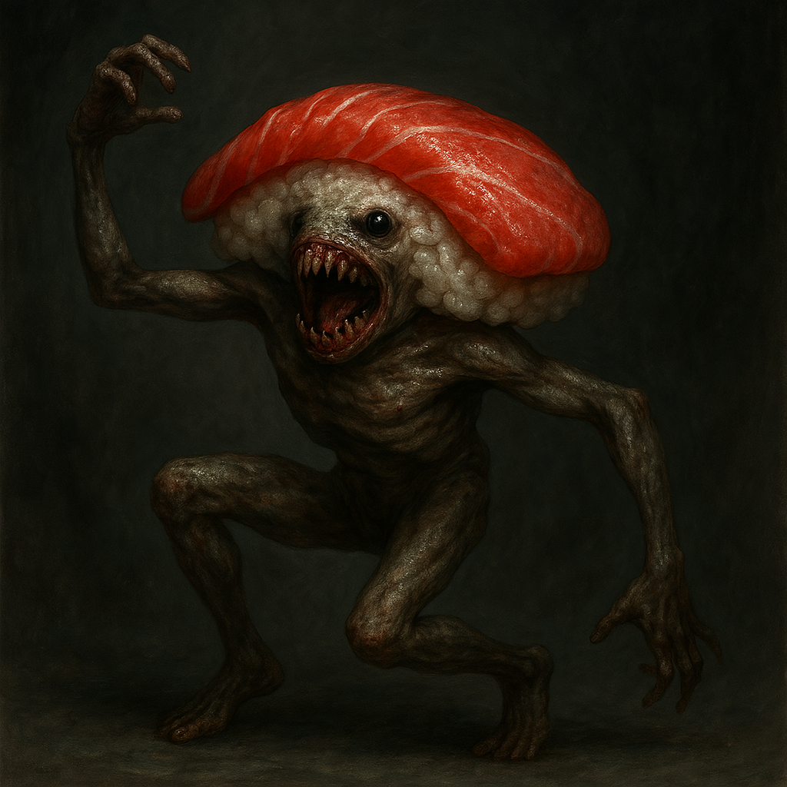

SAV-0011 「うっふ～んスシ くねくねくねくね」
危険レベル : カスタード
収容手順
SAV-0011はセクター『寿』の保護局Bの個室に収容します。
SAV-0011が個室内でダンスを踊ることは許可しますが、その様子を10秒以上注視しないようにしてください。
発生したSAV-0011-1は治療方法が見つかるまでは同様の個室内で放置します。
説明
SAV-0011は、「 ぢょもぢょも」と名乗る寿司型の生物です。2足歩行で自律して立つことが可能ですが、骨がないかのようなくねくねとしたダンスを踊ります。その際には、「うっふ～んスシ」といった鳴き声を発します。
SAV-0011の異常性は、そのダンスを10秒以上注視した場合に発生します。その対象をSAV-0011-1とします。SAV-0011-1は、自分の意志とは反してSAV-0011と同じダンスを踊るようになります。
アーカイブ
202 /5/
スシダンス教室に行った人が帰って来ないという噂が 県 市で広がる。不審に思った選ばれし者-NASがスシダンス教室を調査する。
202 /5/
調査中にSAV-0011-1になった選ばれし者-NASを発見。
202 /6/
SAV-0011-1を物理的に固定してレントゲンを撮る。
骨は砕けていた。
活性化したSAV-0011の様子
この記事は@potatokunによって書かれました。画像の生成に一部ChatGPTを使用しました。